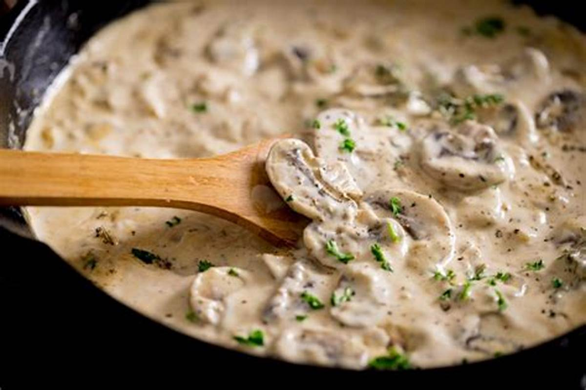

Creamy Mushroom Rice
Back to Recipes

Description
A simple, quite cheap and quick dinner recipe for the busy days. Not much chopping and quick to do. Only 3 ingredients!
Ingredients
- 350g sliced mushrooms
- 30% cooking cream
- 200g rice
Steps
- Cook the rice, either in the pot or in a rice-cooker. I will be using a rice-cooker, because then there is no need for supervision
- While the rice is cooking, chop up the mushrooms. Depending on taste you can use the stems too. Try to cut them thin or to small pieces.
- After that, we can make our delicious sauce: Heat up a little oil in the pan
- Then, put the choppen mushrooms in, start cooking them, for about 2-3 minutes on medium heat
- Pour the cooking cream and keep cooking on medium heat until the mushrooms are soft
- Serve together with the rice!